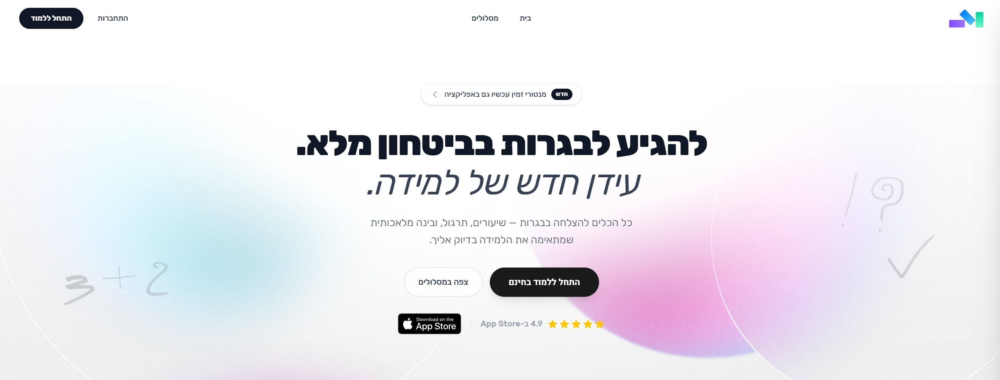

Projects
Below are selected projects that show my approach to engineering: clean design, reliable implementation, and practical results.

Mentori
Summary: AI-powered full-stack tutoring platform serving 200+ active users in production.
Tech: React, TypeScript, Node.js, MongoDB.
- Built and deployed an AI-powered full-stack tutoring platform serving 200+ active users in production.
- Designed scalable REST APIs and MongoDB data models to support real-time interactions.
Fake-Detector
Summary: Modular computer vision framework for fake image detection using U-Net (segmentation), ResNet (CNN classification), and Vision Transformers.
Tech: U-Net, ResNet, Vision Transformer (ViT), Python.
- Implemented end-to-end training, validation, and evaluation pipelines with reusable dataset and preprocessing utilities.
- Structured the repository using branch-isolated model pipelines to enable reproducible experiments and architecture benchmarking.
- Conducted comparative analysis between CNN and transformer-based approaches.
Bank Infrastructure
Summary: C++ banking system built with OOP principles, core data structures, and file-based persistence.
Tech: C++.
- Developed a C++ banking system using OOP principles, data structures, and file-based persistence.
- Implemented transaction processing with validation, error handling, and modular system design.